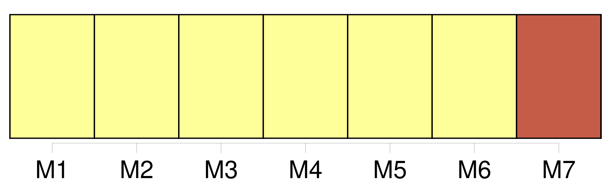
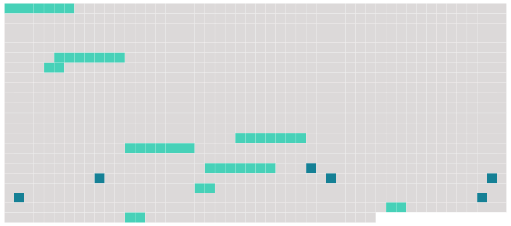

Longueur nb maillons : 15 mentions |
 |
[La commission prévue par l'article 262] se réunit dans le courant du mois de juin pour établir la liste annuelle des jurés conformément à l'article 263. [2 phrases]
Article R2-3 [9 phrases]
Article R2-6
Le président de [la commission prévue à l'article 262] adresse aux services de la police ou de la gendarmerie nationales territorialement compétents la liste des personnes figurant sur la liste préparatoire qui n'ont pas été inscrites sur la liste annuelle du jury d'assises afin que, conformément au 3 ° de l'article 10-5, ces services procèdent, avant le 1er septembre, à la consultation des traitements automatisés prévus à l'article 230-6. [1 phrases]
Paragraphe 2 : Etablissement de la liste Conformément à l'article 10-5, [elle] exclut de la liste préparatoire de la liste annuelle les personnes mentionnées aux 1 ° à 3 ° de cet article.
[Elle] exclut en outre provisoirement de cette liste les personnes qui n'ont pas adressé à [son] président le recueil d'informations dans le délai prévu au 1 ° de l'article R. 2-3. Si [la commission] ne dispose pas des éléments suffisants pour arrêter la liste des citoyens assesseurs comportant le nombre de personnes fixé par l'arrêté pris en application de l'article 10-2, [elle] peut procéder, dans l'ordre déterminé par le tirage au sort, à l'examen de la situation des personnes ayant adressé tardivement le recueil d'informations. Si, à la suite de cet examen, la liste ne peut être arrêtée, [son] président procède ou fait procéder par les services de la police ou de la gendarmerie nationales, conformément au 3 ° de l'article 10-5 et au sixième alinéa de cet article, aux vérifications complémentaires qui apparaissent nécessaires.
[La commission] se réunit à nouveau dans le courant du mois d'octobre pour établir la liste annuelle.
Article R2-8 |
 |
Il est possible de télécharger la ressource sur la page Ortolang |
Si vous avez des questions ou vous voyez des erreurs, merci d'envoyer un mail à silvia.federzoni89@gmail.com |